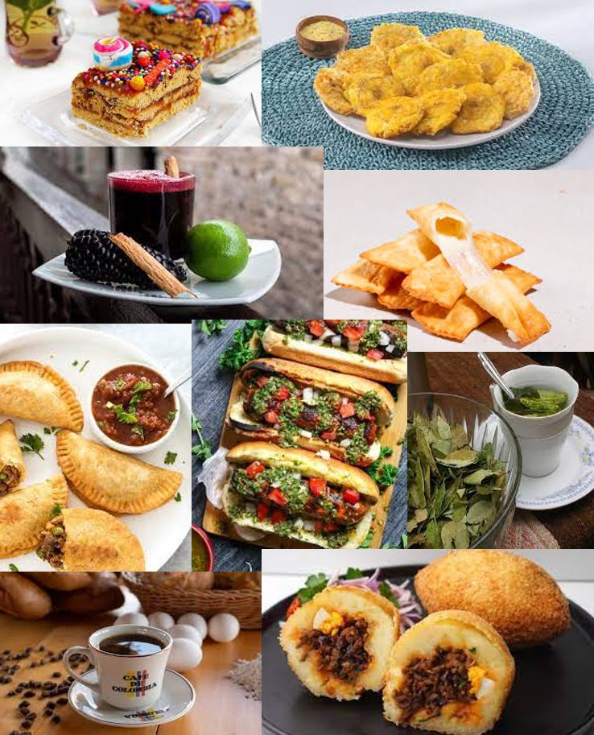

Location | Home | About Us | Cats


We count with a wide variety of snacks from different parts of South America, so you better get ready to taste our delicious food!
- Empanadas
A popular Latin American and Spanish pastry, empanadas are stuffed bread or dough filled with a variety of ingredients like meat, cheese, or vegetables. They are often fried or baked.
- Tequeños de queso
A Venezuelan snack, tequeños are sticks of white cheese wrapped in a thin dough and deep-fried until crispy and golden.
- Patacones
Known in some regions as tostones, these are twice-fried plantain slices common in Latin American cuisine. They're often served as a side dish or appetizer.
- Chicha morada, Coca tea and Colombian coffee
A traditional Peruvian beverage made from purple corn, fruits, and spices, usually served cold.
Originating from the Andes region, particularly in countries like Peru and Bolivia, this tea is made from the leaves of the coca plant and is known for its mild stimulant effects.
World-renowned for its quality and flavor, Colombian coffee is a mild, aromatic coffee grown in the coffee-growing region of Colombia.
- Turron
A sweet confection typically made of honey, sugar, and egg white, mixed with toasted almonds or other nuts. It's popular in Spain and many Latin American countries.
- Choripan
A popular street food in countries like Argentina and Uruguay, choripan consists of a grilled chorizo sausage served in a bread roll, often accompanied by condiments like chimichurri.
- Papa rellena
A traditional Latin American dish, particularly in Peru and Colombia, consisting of mashed potato stuffed with a savory filling, then fried until golden and crispy.